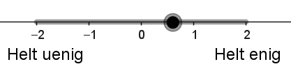

Kandidattest
Formål
Formålet med dette forløb er
- at lære softmax at kende som et værktøj til multipel klassifikation.
- at lære lidt om kunstige neuroner, samt at anvende en app til at træne en kunstig neuron.
- at undersøge, hvordan en kunstig neuron til multipel klassifikation kan bruges til at forudsige, hvilket parti man vil stemme på ud fra svar på en række spørgsmål, som det for eksempel gøres i kandidattests.
Softmax modellen
Vi vil gerne lave en model, som kan forudsige, hvilket parti man vil stemme på, baseret på svarene fra en række spørgsmål. Det er for eksempel noget lignende, der sker, når diverse medier laver kandidattests i forbindelse med valg. Testene fungerer som regel på den måde, at man bliver stillet en række forskellige spørgsmål, og så skal man svare på en skala fra "helt uenig" til "helt enig". Disse kategorier af svar kan for eksempel oversættes til matematik1 på denne måde:
1 I nogle kandidattests kan man ikke vælge "Hverken/eller", men de resterende kategorier oversættes stadig til negative og positive værdier, som det er eksemplificeret i tabellen.
| Helt uenig | Uenig | Hverken/eller | Enig | Helt enig |
|---|---|---|---|---|
| \(-2\) | \(-1\) | \(0\) | \(1\) | \(2\) |
Vi starter med et meget lille fiktivt eksempel, hvor fire personer: Andy, Bella, Charlie og Doresa, har svaret på to spørgsmål samt angivet, hvilket parti de stemmer på.
Vi forestiller os, at de to spørgsmål er:
Spørgsmål 1: Topskatten skal sættes op.
Spørgsmål 2: Danske virksomheder skal pålægges en CO2-afgift.
Vi vil så indføre to variable \(x_1\) og \(x_2\), hvor
\(x_1\): svaret på "Topskatten skal sættes op" angivet på en skala fra \(-2\) til \(2\).
\(x_2\): svaret på "Danske virksomheder skal pålægges en CO2-afgift" angivet på en skala fra \(-2\) til \(2\).
Vi lader som om, at partierne er S (Socialdemokratiet), E (Enhedslisten) og V (Venstre). Det parti, som en given person vil stemme på, vil vi kalde for \(t\) (som står for targetværdi). Andy, Bella, Charlie og Doresa har nu svaret følgende:
| Navn | Spørgsmål 1 \((x_1)\) | Spørgsmål 2 \((x_2)\) | Parti (\(t\)) |
|---|---|---|---|
| Andy | \(\color{#8086F2}{\textrm{Helt uenig } (-2)}\) | \(\color{#8086F2}{\textrm{ Helt uenig } (-2)}\) | V |
| Bella | \(\color{#8086F2}{\textrm{Uenig } (-1)}\) | \(\color{#F288B9}{\textrm{Enig } (1)}\) | S |
| Charlie | \(\color{#8086F2}{\textrm{Uenig } (-1)}\) | \(\color{#8086F2}{\textrm{Uenig } (-1)}\) | S |
| Doresa | \(\color{#F288B9}{\textrm{Enig } (1)}\) | \(\color{#F288B9}{\textrm{Helt enig } (2)}\) | E |
Bemærk her, at svarene "Helt uenig" og "Uenig" er farvet lyseblå, mens "Helt enig" og "Enig" er farvet lyserøde.
Vi vil nu lave en model, hvor man ud fra de svar, man giver på de to spørgsmål, kan forudsige, hvor sandsynligt det er, at man stemmer på hvert af de tre partier. Vi vil træne modellen, så den passer godt til svarene fra de fire personer og derefter håbe, at den også vil passe godt til andre personer. Naturligvis er to spørgsmål og fire personer alt for lidt, men det gør vi noget ved senere.
Vi udregner så for enhver kombination af person og parti en score:
\[ \textrm{score}(\textrm{person, parti}) = w_0 + w_1 \cdot x_1+ w_2 \cdot x_2 \]
hvor \(w_0\) kaldes for bias og \(w_1\) og \(w_2\) kaldes for vægte.
Bias og vægte kan være forskellige for hvert parti, så vi kalder dem for \(s_0, s_1, s_2\) (Socialdemokratiet), \(e_0, e_1, e_2\) (Enhedslisten) og \(v_0, v_1, v_2\) (Venstre).
Vi sætter disse bias og vægte til nogle lidt tilfældige værdier til at starte med.
| Parti | \(w_0\) | \(w_1\) | \(w_2\) |
|---|---|---|---|
| V | \(v_0 = 0\) | \(v_1 = -1\) | \(v_2 = 0\) |
| S | \(s_0 = 0\) | \(s_1 = 1\) | \(s_2 = 0\) |
| E | \(e_0 = 0\) | \(e_1 = 0\) | \(e_2 = 0\) |
For Andy kan vi så udregne:
\[ \begin{aligned} &\textrm{score}(\textrm{Andy, V}) = 0 + (-1) \cdot (-2) + 0 \cdot (-2) = 2 \\ &\textrm{score}(\textrm{Andy, S}) = 0 + 1 \cdot (-2) + 0 \cdot (-2) = -2 \\ &\textrm{score}(\textrm{Andy, E}) = 0 + 0 \cdot (-2) + 0 \cdot (-2) = 0 \end{aligned} \]
Så lige nu er den højeste score for Andy for V, hvilket er godt, da han faktisk stemmer på Venstre.
Men modellen skulle jo ikke kun give en score, men faktisk give en sandsynlighed for hvert parti. Så vi skal have fundet en metode til at få sandsynligheder i stedet for scores. Om sandsynlighederne ved vi, at de skal være positive, ligge mellem \(0\) og \(1\) og tilsammen give \(1.\)
En simpel måde at få tallene positive på er at opløfte \(\mathrm{e}\) i scoren:
\[ \begin{aligned} \mathrm{e}^2 & \approx 7.389 \\ \mathrm{e}^{-2} & \approx 0.135 \\ \mathrm{e}^0 &=1 \end{aligned} \]
Så lægges de tre tal sammen og hvert af tallene divideres med summen:
\[ \textrm{sum}=7.389 + 0.135 + 1 = 8.524 \]
For Andy giver det følgende:
| Parti | Score | \(\mathrm{e}^{\textrm{score}}\) | Sandsynlighed |
|---|---|---|---|
| V | \(2\) | \(7.389\) | \(\frac{7.389}{8.524} \approx 86.68 \%\) |
| S | \(-2\) | \(0.135\) | \(\frac{0.135}{8.524} \approx 1.59 \%\) |
| E | \(0\) | \(1\) | \(\frac{1}{8.524} \approx 11.73 \%\) |
Så med de valgte værdier af bias og vægte, angiver modellen en sandsynlighed på \(86.68 \%\) for V, \(1.59 \%\) for S og \(11.73 \%\) for E for Andy. Da han faktisk stemte på V, er det jo rigtigt fint, uden dog at være helt perfekt, da vi helst ville have endnu større sandsynlighed for Venstre for Andy.
Denne metode til at omregne fra scores til sandsynligheder kaldes for softmax.
Det var åbenlyst ikke så godt for Bella, Charlie og Doresa, da modellen for alle tre peger på et forkert parti. Idéen er nu, at vi skal ændre bias og vægte, så modellen bliver bedre.
Lad os i første omgang se på \(w_1\) og dermed \(x_1\). Bemærk, at \(x_1 = -2\) for Andy, at \(x_1 = -1\) for Bella og Charlie, og at \(x_1 = 1\) for Doresa. Da vi gerne vil have Andy til at få en høj score, og dermed en høj sandsynlighed for Venstre, giver det mening at lade \(v_1\) være en negativ værdi, så \(v_1 \cdot x_1\) bliver positiv. Før havde vi sat \(v_1=-1\), men lad os forstærke effekten med \(v_1 = -3\), så scoren for Andy bliver højere.
Det giver Andy en høj score \(v_1 \cdot x_1 = -3 \cdot (-2) = 6\) for Venstre sammenlignet med hans score for Socialdemokratiet og Enhedslisten, hvilket er godt, da vi gerne vil have, at modellen peger på Venstre for ham.
Det giver Doresa en lav score \(v_1 \cdot x_1 = -3 \cdot 1= -3\) i forhold til hendes scores for de øvrige partier, hvilket også er godt, da vi gerne vil have, at modellen ikke peger på Venstre for hende.
Det giver så desværre både Bella og Charlie en høj score, da \(v_1 \cdot x_1 = -3 \cdot (-1) = 3\), hvilket ikke er så godt, da vi gerne vil have, at modellen ikke peger på Venstre for dem. Det venter vi lige med at gøre noget ved, da vi starter med at få modellen til at pege på Enhedslisten for Doresa.
Samlet ser det nu således ud, hvor både (score) og sandsynlighed er angivet for hvert parti.
| Person | Venstre | Socialdemokratiet | Enhedslisten |
|---|---|---|---|
| Andy | (\(6\)) \(99.97 \%\) | (\(-2\)) \(0.03 \%\) | (\(-12\)) \(0.00 \%\) |
| Bella | (\(3\)) \(98.19 \%\) | (\(-1\)) \(1.80 \%\) | (\(-6\)) \(0.01 \%\) |
| Charlie | (\(3\)) \(98.19 \%\) | (\(-1\)) \(1.80 \%\) | (\(-6\)) \(0.01 \%\) |
| Doresa | (\(-3\)) \(0.01 \%\) | (\(1\)) \(0.67 \%\) | (\(6\)) \(99.32 \%\) |
Vi skal nu have modellen til at vælge Socialdemokratiet for Bella og Charlie, men uden at ødelægge, at modellen vælger Venstre til Andy og Enhedslisten til Doresa.
Med en fornuftig værdi af bias for Socialdemokratiet (for eksempel på \(4.5\)) kan tabellen komme til at se således ud:
| Person | Venstre | Socialdemokratiet | Enhedslisten |
|---|---|---|---|
| Andy | (\(6\)) \(97.07 \%\) | (\(2.5\)) \(2.93 \%\) | (\(-12\)) \(0.00 \%\) |
| Bella | (\(3\)) \(37.75 \%\) | (\(3.5\)) \(62.24 \%\) | (\(-6\)) \(0.00 \%\) |
| Charlie | (\(3\)) \(37.75 \%\) | (\(3.5\)) \(62.24 \%\) | (\(-6\)) \(0.00 \%\) |
| Doresa | (\(-3\)) \(0.01 \%\) | (\(5.5\)) \(37.75 \%\) | (\(6\)) \(62.24 \%\) |
Men det kan stadig gøres bedre, blandt andet ved også at tage \(w_2\) i brug.
Brug af app til træning af kunstig neuron
Med det meget lille og simple eksempel kunne vi altså godt justere vægtene manuelt og få et nogenlunde resultat. Men hvis der bliver \(100\), \(1000\) eller millioner af vægte, så er det næppe en god idé. Det kræver noget lidt mere avanceret matematik, som vi ikke vil gennemgå i dette forløb. Du kan læse mere om dette i noten om Kunstige neurale netværk til multipel klassifikation.
I stedet vil vi bruge en app til formålet. Du finder app’en her og datasættet som Excel fil her.
Med app’ens værdier ser tabellen således ud, hvilket må siges at være et meget tilfredsstillende resultat:
| Person | Venstre | Socialdemokratiet | Enhedslisten |
|---|---|---|---|
| Andy | (\(6.56\)) \(97.72 \%\) | (\(2.80\)) \(2.28 \%\) | (\(-9.36\)) \(0.0 \%\) |
| Bella | (\(-4.06\)) \(0.02 \%\) | (\(4.48\)) \(99.23 \%\) | (\(-0.41\)) \(0.75 \%\) |
| Charlie | (\(0.01\)) \(3.21 \%\) | (\(3.42\)) \(96.68 \%\) | (\(-3.43\)) \(0.10 \%\) |
| Doresa | (\(-15.12\)) \(0.00 \%\) | (\(5.18\)) \(0.85 \%\) | (\(9.94\)) \(99.15 \%\) |
16 politiske kandidaters svar
Lad os se på et lidt større eksempel, nu med autentiske data fra en kandidattest til folketingsvalget i 2026. Vi ser på 16 kandidater og deres svar på to spørgsmål.
| Parti | Navn | Spørgsmål 1 | Spørgsmål 2 |
|---|---|---|---|
| Soc | Ane Halsboe-Jørgensen | \(\color{#F288B9}{\textbf{Enig}}\) | \(\color{#F288B9}{\textbf{Enig}}\) |
| Soc | Flemming Møller Mortensen | \(\color{#8086F2}{\textbf{Uenig}}\) | \(\color{#8086F2}{\textbf{Uenig}}\) |
| Soc | Kiki Bille Bach | \(\color{#F288B9}{\textbf{Enig}}\) | \(\color{#F288B9}{\textbf{Enig}}\) |
| Soc | Morten Ryom | \(\color{#F288B9}{\textbf{Enig}}\) | \(\color{#F288B9}{\textbf{Enig}}\) |
| Ven | Anita Vivi Lilholt | \(\color{#8086F2}{\textbf{Meget uenig}}\) | \(\color{#F288B9}{\textbf{Enig}}\) |
| Ven | Anne Honoré Østergaard | \(\color{#8086F2}{\textbf{Meget uenig}}\) | \(\color{#F288B9}{\textbf{Enig}}\) |
| Ven | Marie Bjerre | \(\color{#F288B9}{\textbf{Enig}}\) | \(\color{#8086F2}{\textbf{Uenig}}\) |
| Ven | Mikkel Bisgaard | \(\color{#8086F2}{\textbf{Uenig}}\) | \(\color{#8086F2}{\textbf{Uenig}}\) |
| Enh | Peder Hvelplund | \(\color{#F288B9}{\textbf{Meget enig}}\) | \(\color{#F288B9}{\textbf{Meget enig}}\) |
| Enh | Runa Friis Hansen | \(\color{#F288B9}{\textbf{Enig}}\) | \(\color{#F288B9}{\textbf{Meget enig}}\) |
| Enh | Lasse P. N. Olsen | \(\color{#F288B9}{\textbf{Meget enig}}\) | \(\color{#F288B9}{\textbf{Enig}}\) |
| Enh | Filippa Emilie Vittrup | \(\color{#F288B9}{\textbf{Meget enig}}\) | \(\color{#F288B9}{\textbf{Meget enig}}\) |
| DD | Inger Støjberg | \(\color{#8086F2}{\textbf{Meget uenig}}\) | \(\color{#8086F2}{\textbf{Uenig}}\) |
| DD | Kristian Bøgsted | \(\color{#8086F2}{\textbf{Uenig}}\) | \(\color{#8086F2}{\textbf{Uenig}}\) |
| DD | Kim Edberg Andersen | \(\color{#8086F2}{\textbf{Meget uenig}}\) | \(\color{#8086F2}{\textbf{Uenig}}\) |
| DD | Liselotte Lynge | \(\color{#8086F2}{\textbf{Meget uenig}}\) | \(\color{#8086F2}{\textbf{Uenig}}\) |
De to spørgsmål er
Spørgsmål 1: De boligejere, der tjener mest på prisstigninger, skal betale mere i skat.
Spørgsmål 2: Reglerne for dyrevelfærd skal strammes, selv om det kan gøre fødevarer fra Danmark dyrere.
Datasættet som Excelfil med værdier fra \(-2\) (helt uenig) til \(2\) (helt enig) er her.
For at skabe lidt overblik, vil et punktplot med \(x_1\) på førsteaksen og \(x_2\) på andenaksen, hvor punkterne har forskellige farver efter parti, være en god idé. Det er dog en udfordring, at flere punkter er ens.
Det skulle gerne være tydeligt, at de fire partiers kandidater ligger delvist opdelt efter parti. Vi vil nu gerne bruge samme type model som tidligere i en kunstig neuron til at undersøge, hvordan vi kan inddele \(xy\)-planen i områder til hvert parti. Først skal vi have trænet modellen på data for de 16 politikere, så vi kender bias og vægte.
Vi vil i det følgende lave en visualisering, som viser betydningen af de \(12\) vægte, som du lige har fundet i opgave 6.
Husk på, at hvis man for en given værdi af \(x_1\) og \(x_2\) skal udregne scoren for Socialdemokratiet, så gør vi det på denne måde:
\[ s_0 + s_1 \cdot x_1 + s_2 \cdot x_2 \] Hvis vi omdøber svaret på spørgsmål 1 (\(x_1\)) til \(x\), svaret på spørgsmål 2 (\(x_2\)) til \(y\) og kalder den beregnede score for \(z\), så får vi ligningen:
\[ z = s_0 + s_1 \cdot x + s_2 \cdot y \]
hvilket kan omskrives til
\[ s_0 + s_1 \cdot x + s_2 \cdot y -z =0 \] Sammenholder vi det med planens ligning \(a \cdot x + b \cdot y + c \cdot z + d=0\), kan vi se, at scoren for Socialdemokratiet udgør en plan i rummet. Noget helt tilsvarende gør sig selvfølgelig gældende for de øvrige tre partier.
Vi vil nu tegne de fire planer:
Vi skal nu have fundet de linjer, som giver den inddeling af \(xy\)-planen, som du har fundet i opgaven ovenfor. Du har blandt andet set, at Socialdemokratiet og Enhedslisten støder op til hinanden. Grænsen mellem de to partier opstår præcist, når de to partier har samme score. Det vil sige, når
\[ s_0 + s_1 \cdot x + s_2 \cdot y = e_0 + e_1 \cdot x + e_2 \cdot y \]
hvor \(x=x_1\) og \(y=x_2\).
Hvis vi samler alt på venstre side, giver det
\[ (s_0 - e_0) + (s_1-e_1) \cdot x + (s_2-e_2) \cdot y=0 \tag{1}\]
Læg mærke til, at det svarer til ligningen for en ret linje i planen på formen
\[ a \cdot x + b \cdot y + c = 0 \]
Vi vil nu tegne de tre linjer, som giver inddelingen af \(xy\)-planen.
Når man svarer på de to spørgsmål, har man egentlig kun følgende svarmuligheder: \(-2\) (helt uenig), \(-1\) (uenig), \(0\) (hverken/eller), \(1\) (enig) eller \(2\) (helt enig). Vi forestiller os nu, at man kan vælge en vilkårlig værdi i intervallet \([-2,2]\). Det kunne for eksempel ske, hvis man skulle angive sit svar på hvert spørgsmål ved hjælp af en skyder, som illustreret her:

Det helt store eksempel med 877 politikere
Til sidst vil vi tage et kig på et autentisk datasæt af en mere relevant størrelse. Vi har \(877\) politikere fordelt på \(12\) partier, som inden folketingsvalget i 2026 har svaret på \(24\) spørgsmål til TV2’s kandidattest.
Datasættet kan downloades her.
Hvis du har haft om krydsvalidering, kan du desuden lave opgave 13.